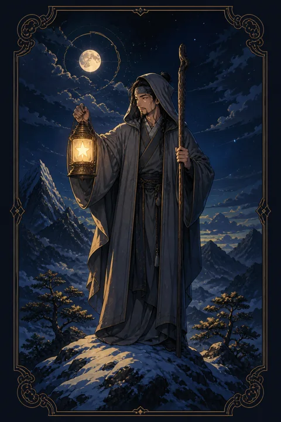

IX 은둔자 카드 — 홀로 밝히는 내면의 등불
은둔자 카드 한눈에 보기
은둔자 카드 상징 읽기

동네보살의 카드 그림은 전통 라이더–웨이트 덱의 뜻을 새 그림으로 옮긴 것입니다. 아래 상징 설명은 전통 덱의 그림을 기준으로 합니다.
눈 덮인 산꼭대기에 회색 망토를 두른 노인이 홀로 서 있습니다. 차가운 봉우리는 사람들이 쉽게 오르지 못하는 높이, 곧 많은 경험 끝에 도달한 깨달음의 자리를 뜻합니다.
노인이 오른손에 든 등불 안에는 여섯 꼭지의 별이 빛나고 있습니다. 이 빛은 멀리까지 비추지 않고 바로 앞 한 걸음만 밝히는데, 인생의 답도 한꺼번에가 아니라 한 걸음씩 드러난다는 가르침입니다.
왼손에 짚은 긴 지팡이는 오랜 여정을 지탱해 온 경험과 인내를 나타냅니다.
고개를 숙인 채 아래를 내려다보는 자세도 눈여겨볼 만합니다. 세상을 등진 것이 아니라, 뒤따라 산을 오르는 이들을 위해 길을 비춰 주는 안내자의 모습이기도 합니다. 주변에 다른 사람도 화려한 배경도 없는 단순한 구도는 모든 것을 덜어 낸 뒤에야 보이는 본질에 집중하라는 뜻을 담고 있습니다.
은둔자 카드 정방향 뜻
정방향의 은둔자는 바깥의 소리를 잠시 줄이고 자기 안에서 답을 찾을 시기가 왔음을 알립니다. 사람들의 의견, 쏟아지는 정보, 남과의 비교에서 한 걸음 물러나면 정말 원하는 것이 무엇인지 선명해집니다.
이 카드의 고독은 쓸쓸함보다는 스스로 선택한 조용함에 가깝습니다. 혼자 책을 읽고, 걷고, 기록하는 시간이 지금은 어떤 모임보다 큰 성장을 줍니다. 공부나 연구처럼 깊이 파고드는 일에서도 좋은 결과를 기대할 수 있습니다.
믿을 만한 스승이나 조언자를 만난다는 뜻으로도 읽힙니다. 말수는 적어도 핵심을 짚어 주는 사람의 한마디가 길을 밝혀 줄 수 있습니다. 서두르지 말고 스스로 납득할 때까지 생각을 무르익히세요. 조용히 보낸 이 시간이 나중에 누군가에게 나눌 수 있는 지혜로 남게 됩니다.
은둔자 카드 역방향 뜻
역방향의 은둔자는 필요한 휴식이었던 거리 두기가 어느새 고립으로 바뀌었을 가능성을 말합니다. 연락을 미루다 보니 관계가 멀어지고, 혼자 고민을 붙잡고 있다 보니 생각이 같은 자리를 맴돌 수 있습니다.
한편으로 이 방향은 동굴에서 나올 준비가 되었다는 좋은 신호이기도 합니다. 충분히 돌아본 시간이 쌓였으니 이제는 그 깨달음을 사람들 속에서 시험해 볼 차례라는 것입니다.
반대로 지나치게 바쁘게 지내며 스스로를 돌아볼 틈을 일부러 없애고 있다는 뜻일 때도 있습니다. 어느 쪽이든 핵심은 혼자인 시간과 함께하는 시간의 비율을 다시 맞추는 일입니다. 오늘 한 사람에게 먼저 안부를 전해 보는 것도 좋은 시작입니다. 혼자 해결하려던 짐을 조금 나누는 것만으로도 막혀 있던 생각이 의외로 쉽게 풀리곤 합니다.
연애에서 은둔자 카드
솔로라면 지금은 누구를 만나느냐보다 내가 어떤 관계를 원하는지 정리하는 시간이 더 값집니다. 외로움을 채우려고 서둘러 만남을 이어가면 비슷한 실망이 되풀이될 수 있습니다. 혼자서도 괜찮은 상태가 되었을 때 비로소 결이 맞는 인연을 알아볼 눈이 생깁니다.
연애 중이라면 한쪽 또는 두 사람 모두 각자의 공간을 필요로 하는 시기입니다. 연락이 뜸해지거나 말수가 줄었다고 해서 곧바로 마음이 식었다고 단정하지 마세요. 서로의 조용한 시간을 존중해 주는 것이 오히려 신뢰를 깊게 합니다. 다만 대화가 완전히 끊긴 채 오래 흘렀다면, 짧게라도 속마음을 나누는 자리를 마련하는 편이 좋습니다. 서로가 혼자만의 시간을 거쳐 더 단단해진 뒤에 나누는 대화는 이전보다 훨씬 깊어질 수 있습니다.
재회·속마음 질문에서 은둔자 카드
재회 질문에서 은둔자가 나오면 상대는 지금 누군가에게 다가가기보다 스스로를 정리하는 데 마음을 쓰고 있을 가능성이 큽니다. 당신이 싫어서라기보다 자기 안의 문제를 먼저 풀어야 한다고 느끼는 상태에 가깝습니다. 서둘러 답을 받아내려 하면 상대는 더 깊이 물러날 수 있으니, 거리를 인정하고 당신도 그 관계에서 무엇을 배웠는지 돌아보는 시간을 가지세요. 상대의 속마음은 아직 겉으로 드러나지 않았지만, 조용히 지난 시간을 되짚고 있을 수 있습니다. 시간이 흐른 뒤 차분한 마음으로 건네는 짧은 안부가 대화를 여는 계기가 될 수 있습니다.
일·금전에서 은둔자 카드
업무에서는 여럿이 부딪히며 하는 일보다 혼자 몰입해 완성도를 높이는 일에 강점이 드러납니다. 분석, 기획, 글쓰기, 개발처럼 깊이가 필요한 과제라면 지금 들이는 집중이 전문성으로 남습니다. 이직이나 진로를 고민 중이라면 남들의 기준보다 내 적성과 가치관을 먼저 점검해 보세요.
금전적으로는 크게 벌이기보다 지출 내역을 들여다보고 불필요한 부분을 덜어내기 좋은 시기입니다. 유행처럼 번지는 돈 이야기에 휩쓸리지 말고, 내 형편에 맞는 계획을 조용히 세우는 편이 안전합니다. 회의나 협업 요청이 많아 집중이 흐트러진다면 하루 중 방해받지 않는 시간을 따로 확보해 두세요. 깊이 있는 결과물은 그런 시간에서 나옵니다.
은둔자 카드는 예일까 아니오일까
은둔자는 지금 답을 내기보다 충분히 생각한 뒤에 정하라는 카드라 즉답은 보류에 가깝습니다. 스스로 확신이 설 때 예가 되며, 역방향이면 혼자 고민만 길어져 결정이 늦어질 수 있으니 믿을 만한 사람에게 조언을 구해 보세요.
자주 묻는 질문
은둔자 카드 역방향은 나쁜 뜻인가요?
역방향의 은둔자는 필요한 휴식이었던 거리 두기가 어느새 고립으로 바뀌었을 가능성을 말합니다. 연락을 미루다 보니 관계가 멀어지고, 혼자 고민을 붙잡고 있다 보니 생각이 같은 자리를 맴돌 수 있습니다.
은둔자 카드가 연애 질문에 나오면요?
솔로라면 지금은 누구를 만나느냐보다 내가 어떤 관계를 원하는지 정리하는 시간이 더 값집니다. 외로움을 채우려고 서둘러 만남을 이어가면 비슷한 실망이 되풀이될 수 있습니다. 혼자서도 괜찮은 상태가 되었을 때 비로소 결이 맞는 인연을 알아볼 눈이 생깁니다.
타로 카드는 어떻게 뽑나요?
타로 카드 페이지에서 카드를 섞으면 메이저 아르카나 22장이 펼쳐집니다. 마음이 가는 세 장을 고르면 과거·현재·미래 자리에 놓이고, 한 장씩 뒤집어 자리와 방향에 맞는 풀이를 읽습니다. 정방향과 역방향은 섞는 순간 정해집니다.